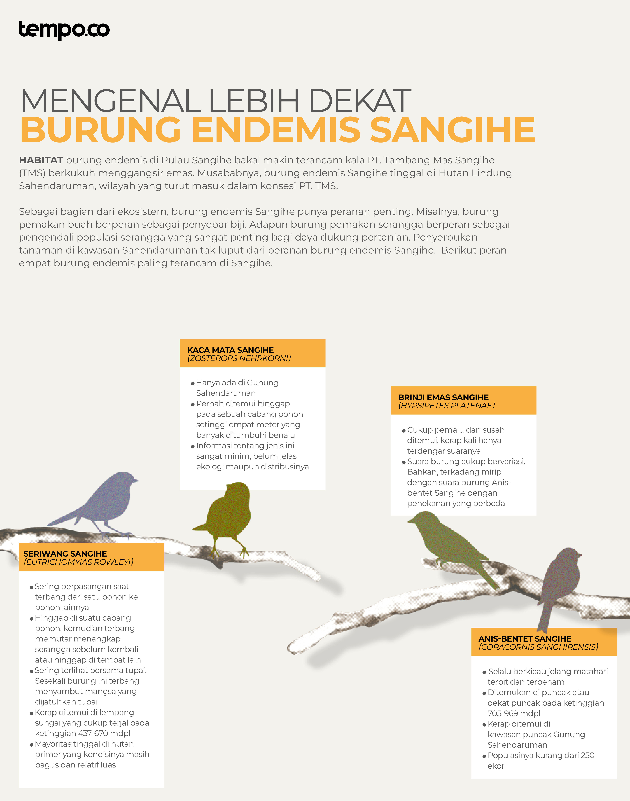

UPACARA Turude bakal kembali ditunaikan warga Pulau Sangihe, Kabupaten Kepulauan Sangihe, Sulawesi Utara, pada 31 Januari tahun depan. Tanggal ini bertepatan dengan hari jadi Kabupaten Sangihe. Warga riuh rendah berkumpul di Tahuna, Ibukota Kabupaten Kepulauan Sangihe, bersiap mengucapkan syukur bersama tetua adat.
Sebilah pisau besi putih disiapkan untuk memotong tamo atau kue adat. Bentuk tamo ini serupa tumpeng. Alih-alih dibuat dari nasi kuning, tamo adat dibuat dari tepung beras ketan. Lauk pauk semacam udang, telur, hingga buah-buahan turut menghiasi tamo adat warga Sangihe.
FOTO (Ini coba kumintain ke Mbak Jull ya, sapatau ada foto pas mereka upacara)
Sebelum memotong tamo, tetua adat mesti melangsungkan menahurending banua yang berarti mengurapi atau mendoakan banua alias bumi. Doa yang diucapkan juga spesifik terhadap semua zat. Misalnya, tetua adat bakal meminta angin untuk datang meniup atau menghilangkan badai. Laut, hutan, tanah, hujan, turut masuk dalam mantra menahurending banua.
“Di dalam doa ini kita meminta untuk keselamatan umat, pulau, dan alam,” kata inisiator gerakan Save Sangihe Island (SSI), Jull Takaliuang, Jumat, 18 November 2022.
Pulau terluar di utara Indonesia ini dikaruniai seabrek berkah dan sumber daya alam. Peneliti Institute for Sustainable Resources Universitas Indonesia, Mochamad Iriawan, menerangkan letak Sangihe di kawasan biogeografi Wallacea menyebabkan pulau ini punya keanekaragaman hayati yang unik.
Kawasan yang dinamai dari peneliti dan naturalis Inggris, Alfred Russel Wallace, ini berada di suatu zona antara daerah biogeografis Sundaland (Indonesia bagian barat-Malaysia) dan Papualand (Australia-Papua). Hasil Penelitian Wallace menemukan bahwa pulau-pulau dalam zona tersebut menghasilkan fauna endemik yang berkembang secara khas.
“Pergerakan lempeng yang sangat dinamis, dibarengi isolasi pulau-pulau kecil, telah mendorong proses pembentukan spesies yang khas dan sangat cepat,” kata Iriawan dalam Opini Koran Tempo edisi 23 Juli 2021. “Muncullah kekayaan flora dan fauna yang unik di masing-masing pulau dan sering kali tergolong langka,” ujarnya.
Critical Ecosystem Partnership Fund mencatat ada 3000-an lebih spesies flora dan fauna yang tinggal di wilayah Wallacea. Sebagian besar spesies tersebut merupakan endemis di wilayah biogeografis ini.
Adapun hasil evolusi unik satwa Wallacea bisa ditemukan di kawasan hutan lindung Gunung Sahendaruman yang terletak di tiga kecamatan Pulau Sangihe, yakni Tamako, Manganitu, dan Tabukan Tengah. Primata terkecil seperti Krabuku Sangihe (Tarsius Sangirensis) hingga burung-burung endemis yang statusnya terancam mendiami hutan lindung Sahendaruman.
Di antara satwa-satwa langka Sangihe, burung endemis menjadi jenis satwa yang terancam bakal hilang lebih cepat. Sebuah studi dari jurnal Current Biology yang diterbitkan pada September 2022 menjelaskan, burung endemis yang punya fisik khusus seperti bulu berwarna-warni dan ukuran bervariasi lebih mungkin hilang dalam krisis keanekaragaman avifauna yang dilanda dunia saat ini.
Krisis avifauna ini disebabkan oleh populasi burung di dunia yang menurun secara signifikan dari tahun ke tahun karena degradasi habitat dan perubahan iklim. Menurut studi Annual Review of Environment and Resources, sudah tiga dekade tren penurunan populasi ini terjadi.
Studi ini menggunakan indeks Daftar Merah Serikat Internasional untuk Konservasi Alam (IUCN) untuk mengukur tren populasi burung seluruh dunia. Jika menggunakan indeks IUCN yang sama, sudah ada tujuh dari sepuluh burung endemik Sangihe dengan kondisi memprihatinkan.
IUCN mengkategorikan status ancaman kepunahan dengan lima kriteria berdasarkan rentang geografis, penurunan atau peningkatan populasi, dan analisis probabilitas kepunahan. Daftar merah IUCN mencatat lima spesies burung endemis Sangihe sudah masuk ke golongan populasi kritis punah, sementara dua lainnya tergolong terancam.
Burung endemis Sangihe punya peran penting untuk ekosistem hutan lindung Sahendaruman. Misalnya, Burung Madu Sangihe berperan untuk penyerbukan bunga, sementara Sariwang Sangihe berperan mengendalikan populasi serangga.
Disrupsi menerus terhadap populasi burung endemis bakal berdampak terhadap regenerasi hutan. Populasi hama juga bisa meledak jika perhatian terhadap burung endemis masih dikesampingkan. Kepunahan burung ini bakal menjadi awal dari kekacauan ekosistem tak hanya di Sahendaruman, melainkan di Pulau Sangihe secara keseluruhan.
Menurut para peneliti Current Biology, jika suatu spesies burung endemis punah, ekosistem yang menjadi rumah burung tersebut bakal melalui proses homogenisasi morfologi. Ekosistem mengalami perubahan drastis dari sebelumnya.
Musababnya, keanekaragaman suatu bioma saling terikat dengan burung endemis tersebut. Studi turut menunjukkan bahwa salah satu bioma yang paling terancam dari fenomena ini adalah burung-burung endemis yang hidup di hutan tropis, seperti Hutan Lindung Sahendaruman.
Konservasionis Burung Indonesia, Ferry Hasudungan, mengatakan tekanan-tekanan terhadap habitat burung endemis terus terjadi. Secara umum, ancaman bagi burung terbagi dua. Pertama, ancaman perubahan iklim yang membuat ekosistem menjadi tidak relevan untuk dihuni. Adapun ancaman kedua berasal dari aktivitas manusia, seperti perburuan liar hingga penambangan.
Rencana PT. Tambang Mas Sangihe (TMS) menggangsir emas di pulau yang berbatasan dengan Filipina ini bakal memperbesar potensi kepunahan burung endemis. Pasalnya, hutan lindung Sahendaruman masuk dalam konsesi perusahaan ini. Tekanan terhadap habitat burung endemis makin besar kala PT. TMS mengalihfungsikan hutan dan mengubah bentang alam. "Dengan status Sahendaruman sebagai hutan lindung, seharusnya kawasan itu dikeluarkan dari area konsesi,” kata Ferry.
Eksplorasi penambangan PT TMS diteken Presiden Soeharto melalui kontrak karya generasi keenam pada 1997. Kegiatan eksplorasi potensi emas dan tembaga TMS makin gencar kala perseroan diakuisisi East Asia Minerals Corporation, sedekade kemudian. Adapun dalam dua tahun terakhir, perusahaan asal Kanada tersebut beralih nama menjadi Baru Gold Corporation.
Izin operasi produksi pertambangan PT. TMS mencapai 42 ribu hektare, lebih dari separuh Pulau Sangihe yang cuma 73 ribu hektare. Padahal, Undang-Undang Nomor 27 tentang Pengelolaan Wilayah Pesisir dan Pulau-Pulau Kecil mengatur pulau kecil dengan luas lebih kecil dari 200 ribu hektare dilarang untuk kegiatan pertambangan. Pulau Sangihe masuk kategori ini.
Kendati demikian, PT. TMS terus memperbarui izin eksplorasi sejak 1997. Pada 29 Januari 2021, Menteri Energi dan Sumber Daya Mineral (ESDM) memperbarui izin eksplorasi produksi untuk kontrak karya atau Izin Usaha Pertambangan Khusus (IUPK) hingga 2054. Pada tanggal yang sama, Menteri ESDM menerbitkan surat keputusan (SK) nomor 163 tentang Persetujuan Peningkatan Tahap Kegiatan Operasi Produksi Kontrak Karya PT TMS.
Warga Sangihe menolak diam. Mereka melawan dengan segala cara, mulai dari demonstrasi hingga mengajukan gugatan. Perjuangan ini ternyata membuahkan hasil. Pada 2 Juni 2022 lalu, Pengadilan Tata Usaha Negara (PTUN) Manado mengabulkan gugatan 56 perempuan Sangihe.
Dalam putusannya, majelis menyatakan izin lingkungan PT TMS dicabut dan kegiatan penambangan mesti ditunda hingga putusan berkekuatan hukum tetap atau inkrah. Namun, PT.TMS memutuskan untuk mengajukan banding.
PT Tambang Mas Sangihe (TMS) mendapat Kontrak Karya Generasi Ke-VI dengan Pemerintah RI melalui Keputusan Presiden No. B.143/Pres/3/1997.
Pengaktifan kembali Kontrak Karya dengan surat nomor 2511/30/DJB/2009 tanggal 31 Agustus 2009.
PT. TMS mendapatkan persetujuan peningkatan tahap Kegiatan Operasi Produksi dari Kementerian ESDM RI dengan nomor 163.K/MB.04/DJB/2021 tanggal 29 Januari 2021, di wilayah seluas 42.000 Ha dengan masa produksi 33 tahun.
Setelah mendapatkan izin peningkatan tahap operasi kontrak karya dari Kementerian ESDM, PT. TMS kemudian melakukan sosialisasi untuk pembebasan lahan pada 22 sampai dengan 24 Maret 2021 di desa Bowone Kecamatan Tabukan Selatan Tengah dengan penawaran harga tanah Rp 50 Juta/Hektar atau Rp. 5000/meter.
Perwakilan WALHI Sulawesi Utara, dan LBH lainnya melakukan audiensi dengan 13 anggota DPRD Kab. Kepulauan Sangihe dengan Ketua DPRD Sangihe Josephus Kakondo BAE, tentang ancaman yang dihadirkan PT. TMS atas pulau Sangihe.
Gabungan 27 menjadi 32 organisasi kemasyarakatan sepakat mendeklarasikan gerakan Save Sangihe Island (SSI) di Pelabuhan Tua Tahuna Sangihe, Sulawesi Utara. Pada kesempatan itu juga diluncurkan penolakan oleh warga Sangihe lewat petisi online di Change.org.
SSI bersama sejumlah tokoh masyarakat dan adat Sangihe mendatangi dan mengadukan nasib ke DPRD Provinsi Sulawesi Utara, dan diterima oleh anggota Komisi III.
Wakil Bupati Kabupaten Kepulauan Sangihe, Helmud Hontong meninggal di pesawat dalam perjalanan dari Bali menuju Makassar.
Gugatan terhadap Keputusan Menteri ESDM tentang peningkatan tahap Operasi Produksi PT.TMS ke PTUN Jakarta Pusat dengan nomor perkara 146/G/2021/PTUN-Jkt. Gugatan ini diajukan oleh Elbi Pieter dan 6 orang penggugat utama lainnya serta 30 orang penggugat intervensi.
Aksi massa dilaksanakan di Tahuna di depan rumah Jabatan Bupati Kepulauan Sangihe dan kantor DPRD Sangihe. Yang menjadi motor adalah para mahasiswa Politeknik Nusa Utara.
Aksi massa di tiga titik lokasi yakni, di depan kantor Kementerian ESDM-RI Jakarta, kantor Gubernur Sulawesi Utara dan di kampung Bowone Kepulauan Sangihe.
Masyarakat dari berbagai kampung di Sangihe mengusir alat berat PT. TMS yang sempat diturunkan di Pelabuhan Pananaru dan dikembalikan ke pelabuhan asal di Bitung. Masyarakat terpaksa melaksanakan ibadah Natal di pelabuhan Pananaru.
Aksi menyambut kedatangan Menteri Kemaritiman dan Investasi Luhut Binsar Panjaitan yang hendak membuka sidang Persekutuan Gereja-Gereja di Indonesia (PGI) yang hendak dilaksanakan di Tahuna.
PT. TMS kembali memaksa mendatangkan alat beratnya menggunakan kapal LCT Bumi Artha Tsabit. Masyarakat kembali berkumpul dan mengusir alat berat PT TMS. Yang mengawal penurunan alat berat tersebut yakni kurang lebih 200 personel kepolisian dari Polres Sangihe yang langsung dipimpin oleh Kapolres Sangihe AKBP Deny W. Tompunuh.
Masyarakat kembali berkumpul di pelabuhan Pananaru karena mendengar bahwa alat berat kembali hendak didatangkan oleh PT. TMS menggunakan kapal ferry KM. Porodisa. Namun ternyata alat tersebut diturunkan kembali oleh Kapten kapal karena tidak memiliki dokumen resmi untuk diangkut.
Perkara 146/G/2021/PTUN-JKT, ditolak oleh Majelis Hakim PTUN Jakarta tanggal 20 April 2022. Para penggugat pun melakukan banding ke PT. TUN Jakarta.
Majelis hakim PTUN Manado memenangkan gugatan 56 perempuan Bowone. Dalam putusan tersebut majelis Hakim PTUN Manado membatalkan, memerintahkan Kepala Dinas Penanaman Modal dan Pelayanan Terpadu Satu Pintu Sulawesi Utara untuk mencabut Keputusan No. 503/DPMPTSPD/REKOM/181/IX/2020 tentang Persetujuan Kelayakan Lingkungan untuk PT. TMS tanggal 25 September 2020, dan memerintahkan untuk menunda pelaksanaan keputusan tersebut. PT. TMS sebagai tergugat intervensi mengajukan banding ke PT.TUN Makassar.
PT. TMS kembali mobilisasi alat beratnya dari Pelabuhan Pananaru pada dini hari ketika masyarakat sedang tertidur. Sejumlah masyarakat dari berbagai kampung pun segera berkumpul di kampung Bowone dan memaksa salah satu dari dua tronton yang membawa alat bor PT. TMS dan dikembalikan ke pelabuhan Pananaru.
Melalui Putusan nomor 140/B/2022/PT.TUN.JKT, Majelis Hakim PT. TUN Jakarta memenangkan banding yang dilakukan oleh Elbi Pieter.
Melalui putusan nomor 115/B/LH/2022/PT.TUN.MKS Majelis hakim PT TUN Makassar mengabulkan banding oleh PT.TMS sebagai tergugat intervensi dan membatalkan keputusan majelis PTUN Manado untuk perkara nomor 57/G/LH/2021/PTUN-MDO.
Menteri ESDM dan PT.TMS mengajukan Kasasi Ke Mahkamah Agung tanggal 26 September 2022 melalui PTUN Jakarta.
Adapun pada 31 Agustus 2022, Pengadilan Tinggi Tata Usaha Negara (PT TUN) Jakarta menyatakan batal SK Menteri ESDM nomor 163. Putusan pengadilan juga mewajibkan Kementerian ESDM mencabut SK tersebut. Namun, Direktur Utama PT.TMS, Terry Filbert, menegaskan bakal tetap melanjutkan program pengembangan sumber daya di Sangihe.
Menurut Terry, keputusan PT TUN Jakarta hanya berhubungan dengan izin operasional pertambangan yang dikeluarkan pada Januari 2021. Oleh sebab itu, keputusan ini tidak mempengaruhi kontrak karya dari Kementerian ESDM yang berlaku hingga 2054.
“TMS terus memegang kontrak karya yang sah dengan pemerintah Indonesia yang tetap tidak terpengaruh oleh keputusan terhadap Kementerian ESDM. Kami kecewa dengan keputusan pengadilan, namun kontrak karya mengizinkan TMS untuk menjelajahi wilayah lisensi kami,” kata Terry kepada Tempo, Rabu, 7 September 2022.
Carut-marut ekosistem di Sangihe kala PT. TMS menggangsir emas jadi sebuah keniscayaan. Juru Kampanye Laut Greenpeace Indonesia, Afdillah, hakulyakin metode open pit mining alias menambang dengan menggali oleh PT. TMS membuat burung endemis perlahan tapi pasti menghadapi kepunahan.
Toh tanpa adanya tambang, kata dia, burung endemis Sangihe sudah kritis. “Apalagi ketika dibuka tambang dalam skala besar dan masif, makin mempercepat kepunahan burung tersebut,” kata Afdillah kepada Tempo, Rabu, 7 Desember 2022.
Menurut Afdillah, penambangan di Sangihe membuat hewan endemis punya dua opsi, yakni berpindah tempat atau mati di sana. Dalam kasus Sangihe, kata dia, peluang hewan endemis punah lebih besar. Musababnya, Sangihe merupakan pulau kecil. Sehingga, opsi hewan endemis untuk bermigrasi bakal terbatas.
Belum lagi, kata Afdillah, ada spesies yang daya dukung hidupnya hanya ada di ekosistem Hutan Lindung Sahendaruman. Misalnya, burung endemis Seriwang Sangihe alias manu’ niu yang hanya ada di Sahendaruman. “Ada spesies yang memang hidup di pohon tertentu, misal pindah ke pulau lain dan tidak ada tumbuhan itu, mereka ngga bisa bertahan hidup,” ujarnya.
Adapun jika hewan endemis Sahendaruman bermigrasi ke utara Pulau Sangihe, Afdillah mengatakan bakal ada overpopulasi yang ujung-ujungnya berdampak pada kepunahan. Ia menganalogikan manusia yang mulanya makan sepiring penuh, mesti dibagi menjadi setengah, bahkan seperempat.
Dia menyebut penolakan masyarakat Sangihe terhadap PT. TMS bukan semata-mata karena tambang membawa kerugian, melainkan semua potensi ekologi di Pulau Sangihe juga bakal terancam. Oleh sebab itu, konstitusi pun mengatur larangan penambangan di pulau kecil. “Ada alasan ekologi yang kuat, bahwa pulau kecil jangan diganggu atau dialihfungsikan,” kata dia.
Inisiator gerakan SSI, Jull Takaliuang, menyebut warga Sangihe sadar betul mereka punya Hutan Lindung Sahendaruman yang keberadaannya sudah diakui di tingkat global. Burung endemis yang eksis, kata dia, bakal tumbang jika PT. TMS berkukuh menggali tambang. Pasalnya, burung-burung ini mudah stress. Misalnya, burung Seriwang Sangihe dan Kaca Mata Sangihe.
Dia menyebut teknik blasting alias peledakan untuk membuka tambang bakal membuat burung endemis panik dan stress. “Yang sudah tinggal beberapa macam ini yang dipaksakan tetap ada, bakal hilang. Burung-burung begitu gampang stress. Apalagi kalau habitat Seriwang Sangihe di lembah, area air dekat sungai,” kata Jull.
Teknik blasting disebut Jull juga bakal mengancam sumber air yang selama ini menghidupi seluruh warga Sangihe. Hutan Sahendaruman menjadi hulu dari 70 sungai yang mengalir di Pulau Sangihe. Warga Sangihe, kata dia, bergantung dari sumber air Sahendaruman.
Oleh sebab itu, hingga kini Jull dan warga Sangihe memasang harga mati bahwa PT. TMS harus pergi. Dia menyebut tidak ada tawar-menawar soal ini. “Pilihannya hanya satu, PT. TMS harus pergi. Jangan korbankan pulau kami,” kata dia.
Penulis
Multimedia
Editor